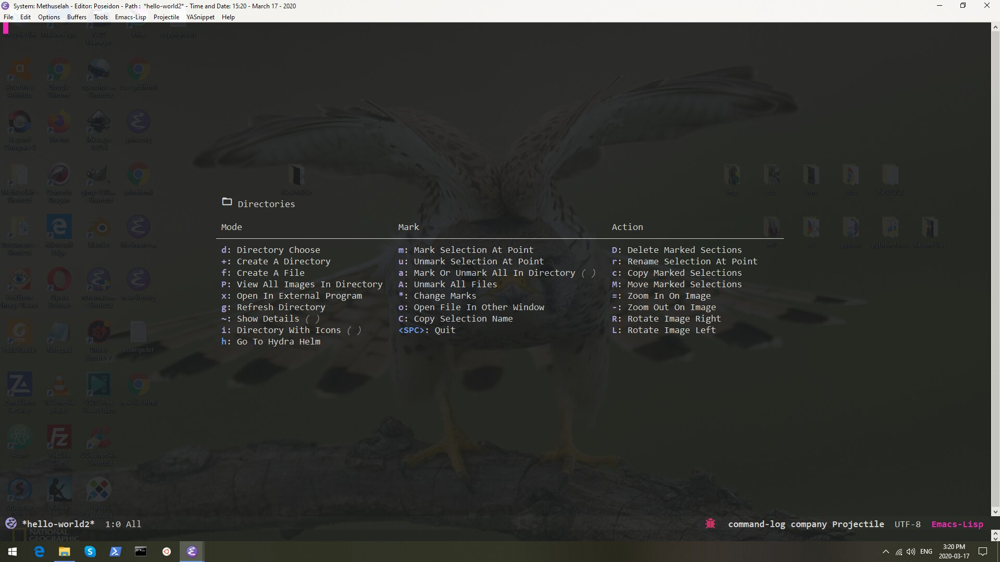

This post covers Parentheses, Directories, Clipboard, and Command Line History from the "Default Operations" section of my init.
Default Operations
Moving the Cursor and Screen
Make/kill/move windows frames buffers
Projectile, Helm and Smex
Parentheses
Directories
Clip board (kill ring)
PDF tools and command line history
Preamble
Emacs is old school. You're either new to it - which means you wouldn't be here unless it was your type of thing - or you know what you're looking for. In either case, go to the side bar of this page and click on the 'Emacs' tag. Then read the posts y date from oldest to newest.
In the last emacs post I covered lines 1377 - 1649. This post covers lines 1652 - 2003. I include the lines for anyone that wants to patch together the entire init from start to finish. The lines won't always match up because I take stuff out when I'm in the init.
Parentheses
Skeleton pairs are included in Emacs. Configure them and you get two brackets of the types you specify with cursor in between when you insert one. Code below. The Smart Parentheses package follows. This hydra configuration is a little different than the others as the hydra is configured within the Smart Parens package. The :commands argument for the use-package implementation defers the loading of everything within the use-package declaration until those commands are called. So you only initialize the Smart Parens stuff after you call web-mode, smartparens-mode, or the parens hydra (Parentheses_/body). This is good because I don't use the parens hydra a lot. It's for moving quickly between expressions, parentheses. The slurp and barf grab characters and words and pull them into the brackets or spit them out of it. I just move around, mark the stuff, then cut and paste. It's faster for me. The juggling part is also for me largely uselesss. What I do use sometimes are the sp-wrap-round and sp-change inner. The wrap round puts quotes, or brackets around your marked region, and the change inner removes everything within the brackets and lets you paste something else. I have a region marking hydra that allows for a kind of hippy expand, which expands the region to everything within the brackets and I use that more often.
Most of this code sets up good defaults for emacs directories management. Hiding details by default makes the screen legible. Configuring C-a to move the cursor back to the start of the directory files. Making the directory if it doesn't exist. The function to create a directory. Getting dired mode role over to the first file when you get to the end. All of these things in emacs require default configuration. Here it is.
;dired movement defaults
(require'dired)
;hide dir details
(add-hook'dired-mode-hook'dired-hide-details-modet)
;; Make dired less verbose
(setq-defaultdired-details-hidden-string"")
; Move files between split panes
(setqdired-dwim-targett)
;; C-a is nicer in dired if it moves back to start of files
(defundired-back-to-start-of-files ()
(interactive)
(backward-char (- (current-column) 2)))
(define-keydired-mode-map (kbd"C-a") 'dired-back-to-start-of-files)
(define-keydired-mode-map (kbd"k") 'dired-do-delete)
;; M-up is nicer in dired if it moves to the fourth line - the first file
(defundired-back-to-top ()
(interactive)
(beginning-of-buffer)
(dired-next-line4))
(define-keydired-mode-map (vector'remap'beginning-of-buffer) 'dired-back-to-top)
(define-keydired-mode-map (vector'remap'smart-up) 'dired-back-to-top)
;; M-down is nicer in dired if it moves to the last file
(defundired-jump-to-bottom ()
(interactive)
(end-of-buffer)
(dired-next-line-1))
(define-keydired-mode-map (vector'remap'end-of-buffer) 'dired-jump-to-bottom)
(define-keydired-mode-map (vector'remap'smart-down) 'dired-jump-to-bottom)
;; Delete with C-x C-k to match file buffers and magit
(define-keydired-mode-map (kbd"C-x C-k") 'dired-do-delete)
(eval-after-load"wdired"'(progn
(define-keywdired-mode-map (kbd"C-a") 'dired-back-to-start-of-files)
(define-keywdired-mode-map (vector'remap'beginning-of-buffer) 'dired-back-to-top)
(define-keywdired-mode-map (vector'remap'end-of-buffer) 'dired-jump-to-bottom)))
;my-dired-create-file
(eval-after-load'dired'(progn
(define-keydired-mode-map (kbd"c") 'my-dired-create-file)
(defuncreate-new-file (file-list)
(defunexsitp-untitled-x (file-listcnt)
(while (and (carfile-list) (not (string= (carfile-list) (concat"untitled" (number-to-stringcnt) ".txt"))))
(setqfile-list (cdrfile-list)))
(carfile-list))
(defunexsitp-untitled (file-list)
(while (and (carfile-list) (not (string= (carfile-list) "untitled.txt")))
(setqfile-list (cdrfile-list)))
(carfile-list))
(if (not (exsitp-untitledfile-list))
"untitled.txt"
(let ((cnt2))
(while (exsitp-untitled-xfile-listcnt)
(setqcnt (1+cnt)))
(concat"untitled" (number-to-stringcnt) ".txt"))))
(defunmy-dired-create-file (file)
(interactive
(list (read-file-name"Create file: " (concat (dired-current-directory) (create-new-file (directory-files (dired-current-directory))))))
)
(write-region""nil (expand-file-namefile) t)
(dired-add-filefile)
(revert-buffer)
(dired-goto-file (expand-file-namefile)))
)
) ;end my dired create file;backup directory
(setqbackup-directory-alist'(("."."~/backups")))
;if directory doesn't exist make it
(defunmy-create-non-existent-directory ()
(let ((parent-directory (file-name-directorybuffer-file-name)))
(when (and (not (file-exists-pparent-directory))
(y-or-n-p (format"Directory `%s does not exist! Create it?"parent-directory)))
(make-directoryparent-directoryt))))
(add-to-list'find-file-not-found-functions'my-create-non-existent-directory)
Neo Tree is Cool
But I don't use it. I have a function that toggles on/off icons in dired buffers and don't need to open up and navigate directories in side window. I just use dired mode. But here it is anyway.
This is a cool set up. Image-dired I think you need to download from the net. It's not on Melpa. The same with dired+, and image+. These guys together with image-magick enable image viewing and resizing in buffers. You can rotate and delete the images as well. Image-dired (or maybe it's image+) makes thumbnails in a directory you specify below. You will need to install image-magick and for that on windows you will need an emacs version compiled for windows with image-magick and pdf-tools support. Of course the image action here is just a convenience, internet explorer works fine (and honestly I only use emacs for images 20% of the time), and for any serious work you would use the shell or another program. I use Inkscape, Gimp, and Faststone Image Viewer. Btw, everything below with a -p on the end of it is a path to a library or executable defined earlier. See earlier emacs posts.
This directories hydra is super useful. Remember, hydras simply consolidate functions you can call from the mini-buffer or with shortcuts defined in their respective packages. The functions I use the most in the hydra are create a directory and create a file. I also often will rename files. Rename is copy, and if you call it with two different directories open in adjacent windows it pre-fills the directory path to the path in the adjacent window so you easily move files from one directory to another. Yes, you can do all this from the shell or internet explorer, and I do usually use internet explorer for this. But when I need to do a lot of specific clean up and renaming in a directory I always use emacs. I'll toggle on and off the details as needed and enable often also icons just for kicks.
;define material icon function
(defunwith-material (iconstr&restheightv-adjust)
(s-concat (all-the-icons-materialicon:v-adjust (orv-adjust0) :height (orheight1)) " "str))
;define dired-modes hydra title
(defvardired-title (with-material"folder_open""Directories"))
;define dired-modes hydra
(pretty-hydra-defineDirectories_ ( :titledired-title:quit-key"q":colorpink )
("Mode"
(("d"dired"Directory Choose")
("+"dired-create-directory"Create A Directory" )
("f"my-dired-create-file"Create A File")
("P"image-dired"View All Images In Directory" )
("x"xah-open-in-external-app"Open In External Program")
("g"revert-buffer"Refresh Directory" )
("~"dired-hide-details-mode"Show Details":togglet )
("i"all-the-icons-dired-mode"Directory With Icons":togglet )
("h"hydra-helm/body"Go To Hydra Helm":colorblue )
);end mode"Mark"
(
("m"dired-mark"Mark Selection At Point" )
("u"dired-unmark"Unmark Selection At Point" )
("a"dired-toggle-marks"Mark Or Unmark All In Directory":togglet )
("A"dired-unmark-all-files"Unmark All Files")
("*"dired-change-marks"Change Marks")
("o"dired-find-file-other-window"Open File In Other Window" )
("C"dired-copy-filename-as-kill"Copy Selection Name")
("<SPC>"nil"Quit":colorblue )
);end mark"Action"
(
("D"dired-do-delete"Delete Marked Sections")
("r"dired-do-rename"Rename Selection At Point" )
("c"dired-do-copy"Copy Marked Selections")
("M"dired-do-rename"Move Marked Selections")
("="imagex-sticky-zoom-in"Zoom In On Image" )
("-"imagex-sticky-zoom-out"Zoom Out On Image" )
("R"imagex-sticky-rotate-right"Rotate Image Right" )
("L"imagex-sticky-rotate-left"Rotate Image Left" )
);end action
);end hydra body
);end pretty-hydra-dired
(bind-key"<C-m> d"'Directories_/body)

Images: Directories Hydra
Some Kill Ring Settings and Functions
Before they had clipboards they had kill-rings. I'm not asking. 😄 "Kill" is copy and "Yank" is paste. In Emacs myself (and most people) use M-w and C-y. I've never liked the M-w for cutting, but I use it anyway. I also have M-y to show the kill-ring in the helm buffer, which I use a lot.
Below is code to browse the kill-ring with C-c 9, which I rarely use. There's also some code to ensure you get the ents of the windows clipboard in your kill ring, which is really important.
; Remove text in active region if inserting text
(delete-selection-mode1)
;clipboard is saved to kill-ring
(defunclipboard-to-kill-ring()
"save the external clipboard contents to the kill ring"
(interactive)
(let ((clip (funcallinterprogram-paste-function)))
(whenclip
(kill-newclip)))
(defadviceyank (beforemaybe-copy-windows-clipboard (arg))
(clipboard-to-kill-ring))
(ad-activate'yank))
;Browse Kill Ring
(use-packagebrowse-kill-ring:defert:config
(setqbrowse-kill-ring-highlight-current-entryt)
:bind
("C-c 9".browse-kill-ring))
Easy Kill
Easy Kill gives an option to add a letter after M-w and save specific items, as follows:
M-w w: save word at point M-w s: save sexp at point M-w l: save list at point (enclosing sexp) M-w d: save defun at point M-w D: save current defun name M-w f: save file at point M-w b: save buffer-file-name or default-directory. - changes the kill to the directory name, + to full name and 0 to basename. The following keys modify the selection:
@: append selection to previous kill and exit. For example, M-w d @ will append current function to last kill. C-w: kill selection and exit +, - and 1..9: expand/shrink selection 0 shrink the selection to the initial size i.e. before any expansion SPC: cycle through things in easy-kill-alist C-SPC: turn selection into an active region C-g: abort
Hungry delete follows that, and it's cool. You use C-d to delete, as usual, but all the empty space is deleted in one shot. So it pulls all the gaps out of the code. It also automatically deletes the entire line if you are at the left margin and the space is gone. So double C-d will delete all trailing white space between two paragraphs and then the next line of the next paragraph. Sanity kill back to indent works backwards. I just highlight the line and delete it.
1
2
3
4
5
6
7
8
9
10
11
12
13
14
15
16
17
18
(use-packageeasy-kill:config
(global-set-key [remapkill-ring-save] #'easy-kill)
(global-set-key [remapmark-sexp] #'easy-mark))
;hungry delete
(use-packagehungry-delete:diminish:config
(global-hungry-delete-mode))
;sanity delete
(defunsanityinc/kill-back-to-indentation ()
"Kill from point back to the first non-whitespace character on the line."
(interactive)
(let ((prev-pos (point)))
(back-to-indentation)
(kill-region (point) prev-pos)))
(bind-key"C-M-<backspace>"'sanityinc/kill-back-to-indentation)
Pdf Tools and Command Line history
PDF Tools of course require an emacs compiled with pdf tools support. See earlier blog posts for installing emacs (search for emacs or install)
paste/substring is a custom function you can use to copy a string, run this function, paste the string into the minibuffer, then paste the last 11 characters of the string anywhere you like (it's on the kill ring). This is useful to copy a youtube URL from the browser with C-c, run this function, paste the youtube URL into the minibuffer, Enter, then paste the Youtube ID anywhere you like (Youtube ID is last 11 ch of URL).
1
2
3
4
5
6
7
8
9
10
11
12
13
14
15
16
17
18
;start server so pdf-tools autostart when pdf is selected can use emacsclient to open in same instance
(server-start)
(add-hook'TeX-after-compilation-finished-functions#'TeX-revert-document-buffer)
;command line history
(use-packagecommand-log-mode:commands (global-command-log-modeclm/toggle-command-log-buffer)
:config
(require'command-log-mode)
(global-command-log-mode)
);end command-log mode;substring
(defunpaste/substring (astring)
"Copy a string to clipboard"
(interactive"sAstring: ")
(with-temp-buffer
(insert (substringastring-11))
(clipboard-kill-region (point-min) (point-max))))
This kind man didn't invent the term scientist so you could make a mockery of earthly geometrics! He did it because science is badass, just like him. Taking science seriously is the first step to better health and a better world for all. You can take that first step here.
"We need very much a name to describe a cultivator of science in general. I should incline to call him a Scientist." ~ William Whewell.
Seriously though, most of our sciency posts are really about computer science, namely Emacs - but don't be swayed by the Old-Skoolers. If you're choosing a text editor for the first time, Emacs is dead.
Didn't you get the memo? And who are you anyway? Frankenstein? Give it up. Get over it. Go with Webstorm, or Sublime - open up your wallet and pay the man already. Or if you absolutely need to get cranked on Javascript, hit up Atom...it's free, and going places.
Having said all that, we use Emacs, and around here, the Earth is round.